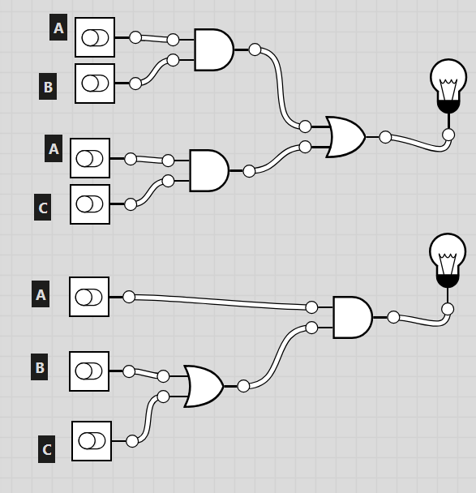

"صباح الخير يا شباب.
النهارده هنبدأ رحلة جديدة مع جزء مهم جدًا اسمه Computer Architecture.
قبل ما نعرف الكمبيوتر بيشغل ألعاب أو برامج أو ذكاء اصطناعي، لازم نفهم هو من جوه شغال إزاي.
لو فتحت أي كمبيوتر أو موبايل هتلاقيه عبارة عن مكونات إلكترونية كتير، لكن السؤال هو...
إزاي المكونات دي كلها بتشتغل مع بعض علشان تنفذ أمر بسيط زي إنك تفتح صورة أو تضغط على زرار؟
ده اللي هنتعلمه خلال الدرس، وهنبدأ من أبسط حاجة موجودة داخل أي كمبيوتر."
📝 الترجمة: معمارية الحاسب
💡 الشرح:
يعني الطريقة اللي كل أجزاء الكمبيوتر متوصلة وبتشتغل بيها مع بعض علشان تنفذ أي أمر.
مش المقصود شكل الجهاز من بره، لكن طريقة شغله من جوه.
➡️ الانتقال
"طيب... بما إن الكمبيوتر جهاز إلكتروني، يا ترى هو بيفهم لغتنا ولا ليه لغة خاصة بيه؟"
❓اسأل الطلبة:
"لو أنا كتبت للكمبيوتر كلمة (Hello)، هل هو بيفهمها كده مباشرة؟ ولا بيحولها لحاجة تانية؟"
"إحنا لسه سألنا الكمبيوتر بيفهم لغة إيه.
الإجابة هي Binary.
الـ Binary هو اللغة الأساسية اللي كل أجهزة الكمبيوتر بتستخدمها.
اللغة دي بسيطة جدًا، لأنها فيها رقمين بس.
0 و1.
بصوا على الجدول.
الصفر غالبًا معناه إن الحاجة مقفولة أو مفيش كهربا أو القيمة False.
أما الواحد فمعناه إن الحاجة شغالة أو فيه كهربا أو القيمة True.
وكمان الصورة اللي تحت بتوضح الفكرة.
كل لمبة منورة معناها 1.
وكل لمبة مطفية معناها 0.
فالكمبيوتر بيشوف الحالات دي كأرقام."
➡️ الانتقال
"دلوقتي عرفنا إن الكمبيوتر بيستخدم 0 و1... لكن ليه اختار رقمين بس؟"
"فاكرين إننا عرفنا إن الكمبيوتر بيستخدم الـ Binary؟
السؤال الطبيعي دلوقتي...
ليه الرقمين دول بس؟
الإجابة لأن الدوائر الإلكترونية تقدر تفرق بسهولة بين حالتين فقط.
وجود كهربا.
أو عدم وجود كهربا.
بصوا على المثال.
أي Switch في الدنيا يا إما مفتوح.
يا إما مقفول.
ولما الكمبيوتر يحول الحالتين دول إلى 0 و1، يبقى عنده طريقة ثابتة وواضحة يفهم بيها كل حاجة.
وده اللي بيخلي الأجهزة الرقمية دقيقة جدًا."
Physical State → Electrical Signal → Binary Value
الكمبيوتر بيحوّل أي Physical State (حالة فيزيائية) زي ضغط زر أو فتح باب إلى Electrical Signal (إشارة كهربائية)، ثم يحولها إلى Binary Value (0 أو 1) لأنها اللغة الوحيدة اللي يقدر يفهمها ويعالجها.
➡️ الانتقال
"طيب لو عندنا رقم واحد بس اسمه 0 أو 1... اسمه إيه؟"
اسأل الطلبة:
"زرار المصعد لما أضغطه يبقى ON ولا OFF؟"
"إحنا عرفنا إن الكمبيوتر بيستخدم 0 و1.
كل رقم واحد من دول ليه اسم.
اسمه Bit.
الـ Bit هو أصغر وحدة بيانات في الكمبيوتر.
لكن Bit واحد لوحده معلوماته قليلة جدًا.
علشان كده الكمبيوتر يجمع كذا Bit جنب بعض.
كل ما نزود عدد الـ Bits، نقدر نمثل أرقام ومعلومات أكتر.
بصوا على الأمثلة.
كل مرة بيتغير Bit واحد، بيطلع رقم جديد."
ولما نجمع أكثر من Bit مع بعض نكوّن Binary Number.
➡️ الانتقال
"إحنا دلوقتي بقينا عارفين يعني إيه Bit... في السلايد الجاية هنشوف لما نجمع 8 Bits مع بعض، هيطلع لنا إيه."
💡 "إحنا عرفنا إن الكمبيوتر بيفهم 0 و1 بس، دلوقتي السؤال: لو أنا عندي رقم عادي زي 13، الكمبيوتر هيكتبه إزاي؟"
"لحد دلوقتي عرفنا إن الكمبيوتر بيتعامل بلغة اسمها Binary، واللغة دي فيها رقمين بس: 0 و1.
لكن إحنا كبشر بنتعامل بأرقام زي 5 و13 و100. يبقى الكمبيوتر هيحولهم إزاي؟
الفكرة كلها إن الـ Binary بيستخدم خانات، وكل خانة ليها قيمة ثابتة.
📌 هنا عندنا الخانات:
1 - 2 - 4 - 8 وكل خانة هي مضاعفات الرقم 2.
والواحد هنا عبارة عن 2 اس 0
دلوقتي هنحول الرقم 13.
نسأل نفسنا: هل 13 فيه 8؟ ✅ أيوه. يبقى نحط 1.
يتبقى 5. هل فيه 4؟ ✅ أيوه. يبقى نحط 1.
يتبقى 1. هل فيه 2؟ ❌ لأ. يبقى نحط 0.
هل فيه 1؟ ✅ أيوه. يبقى نحط 1.
فالنتيجة تبقى:
1101
يعني الرقم 13 في النظام العشري بقى 1101 في النظام الثنائي.
💬 أحب أقولهم إن الـ 1 معناه إننا استخدمنا قيمة الخانة، والـ 0 معناه إننا مستخدمناهاش."
"مين يقدر يحاول يحول الرقم 9 بنفس الطريقة؟"
➡️ "دلوقتي بقينا نعرف الكمبيوتر بيمثل الأرقام، لكن هو بياخد قرارات إزاي؟ هنا بقى هنشوف الـ Logic Gates."
💡 "الكمبيوتر مش بس بيخزن أرقام، ده كمان لازم ياخد قرارات كل ثانية."
"تخيل إن الكمبيوتر قدامه معلومات داخلة، ولازم يقرر يطلع إيه.
الشغل ده بيعمله جزء صغير جدًا اسمه Logic Gate.
🧩 الـ Logic Gate عبارة عن دائرة إلكترونية صغيرة.
بتستقبل: 👉 Input
وبعد ما تعمل عملية بسيطة، بتطلع: 👉 Output
يعني:
Input ➜ Logic Gate ➜ Output
وكل الكلام ده بيشتغل باستخدام 0 و1 بس.
يعني بدل ما الإنسان يقول: 'لو الشرط اتحقق اعمل كذا.'
الكمبيوتر بينفذ نفس الفكرة باستخدام Logic Gates.
➡️ "أول نوع من الـ Logic Gates اسمه AND."
💡 "كل Logic Gate ليها قاعدة مختلفة، وأول قاعدة هنتعلمها هي AND."
"الـ AND Gate عندها شرط واضح جدًا.
لازم كل المدخلات تكون 1.
لو حتى واحد بس صفر... الناتج هيكون صفر.
بصوا على الجدول.
0 و0 ➜ 0
0 و1 ➜ 0
1 و0 ➜ 0
1 و1 ➜ ✅ 1
يعني دي الحالة الوحيدة اللي بتشتغل فيها.
📌 المعادلة بتاعتها:
A AND B
أو
A × B
مثال من الحياة:
عربية المصنع مش هتشتغل إلا لو:
🔹 زرار التشغيل متداس. 🔹 وزرار الأمان متداس.
لو واحد منهم بس متحققش... العربية مش هتشتغل."
"لو A = 1 وB = 0... الناتج كام؟"
الإجابة: 0
➡️ "طيب لو إحنا مش محتاجين الشرطين، ومحتاجين أي واحد منهم بس؟ يبقى نستخدم OR Gate."
💡 "الـ OR أسهل شوية من AND لأنها مش بتشترط إن الاتنين يبقوا شغالين."
"الـ OR Gate بتقول:
لو فيه أي Input واحد قيمته 1... يبقى الناتج هيكون 1.
يعني يكفي واحد بس.
نشوف الجدول.
0 و0 ➜ 0
0 و1 ➜ 1
1 و0 ➜ 1
1 و1 ➜ 1
يعني الحالة الوحيدة اللي بتطلع صفر هي لما الاتنين يكونوا صفر.
📌 المعادلة:
A OR B
أو
A + B
مثال بسيط جدًا:
عندنا إنذار.
لو Sensor A شاف خطر...
أو
Sensor B شاف خطر...
الإنذار هيشتغل.
مش لازم الاتنين يشوفوا الخطر مع بعض."
"لو A = 0 وB = 1... الناتج كام؟"
الإجابة: 1
➡️ "دلوقتي عرفنا إن الكمبيوتر يقدر يمثل الأرقام باستخدام Binary، ويقدر كمان ياخد قرارات باستخدام Logic Gates. في السلايد اللي بعده هنشوف أنواع جديدة من البوابات المنطقية وإزاي نبني دوائر أعقد بيها."
"إحنا اتعلمنا AND و OR، ودول بيحتاجوا مدخلين. دلوقتي هنتعرف على بوابة مختلفة، بتشتغل على مدخل واحد بس."
"📌 اسمها NOT Gate.
دي أبسط Logic Gate عندنا.
وظيفتها إنها تعكس القيمة.
يعني لو دخلها 1 تطلع 0.
ولو دخلها 0 تطلع 1.
📊 نبص على الـ Truth Table.
0 ➜ 1
1 ➜ 0
يعني مفيش أي حالات تانية لأنها بتتعامل مع Input واحد بس.
🖼️ الصورة اللي على اليمين بتوضح رمز الـ NOT Gate.
لاحظوا الدائرة الصغيرة اللي في آخر الرمز، دي معناها إن الإشارة اتعكست.
📌 المثال:
لو دخلنا 1...
هيطلع 0.
ولو دخلنا 0...
هيطلع 1.
💡 تخيلوها زي مفتاح نور.
لو النور شغال، حد ضغط زرار بيعكس الحالة فيطفيه.
ولو مطفي، يعكسها ويشغله.
📌 وعلشان كده بنقول إن NOT بتحول:
TRUE ➜ FALSE
FALSE ➜ TRUE."
➡️ "دلوقتي عرفنا كل Gate لوحدها، تعالى نجمعهم كلهم في مقارنة واحدة."
"عرفنا شكل جدول الحقيقة، دلوقتي نعرف هو بيستخدم في إيه."
"📌 الـ Truth Table معناه جدول الحقيقة.
وده جدول بنكتب فيه كل الاحتمالات الممكنة للمدخلات.
لو عندنا مدخلين.
يبقى الاحتمالات هما:
00
01
10
11
بس.
مفيش احتمال خامس.
بعد كده نحسب الناتج لكل حالة حسب نوع الـ Logic Gate.
💡 ليه بنعمل كده؟
✅ علشان نتأكد إن الدائرة شغالة صح.
✅ نكتشف أي خطأ.
✅ ونتوقع الـ Output قبل ما نبني الدائرة.
يعني بدل ما نوصل أسلاك ونغلط،
نجرب الأول على الورق."
"لو عندنا 3 Inputs، كام احتمال مختلف؟"
✅ 8.
➡️ "دلوقتي عرفنا نحسب النتائج، لكن إزاي نحول الكلام ده لدائرة إلكترونية؟"
"المهندس ساعات يكتب معادلة، وساعات يرسم دائرة، والاتنين بيوصلوا لنفس النتيجة."
"📌 هنا بنتعرف على حاجة اسمها Boolean Equation.
دي معادلة بتوصف منطق الدائرة.
مثلاً:
A AND B
دي مجرد معادلة.
لكن نقدر نحولها لرسم فيه Logic Gates.
🖼️ بصوا على المثال البسيط.
A و B داخلين على AND Gate.
ويطلع Output.
أما الرسم اللي على اليمين فهو دائرة أكبر.
فيها أكتر من Logic Gate متوصلين مع بعض.
يعني ممكن دائرة تستخدم:
AND
وNOT
وبعدين الناتج يدخل على Gate تانية.
💡 الفكرة المهمة هنا:
المعادلة والرسم الاتنين بيشرحوا نفس المنطق.
واحد مكتوب.
والتاني مرسوم.
والمهندس يقدر يستخدم أي طريقة فيهم."
"لو شفت معادلة فيها AND، تتوقع هتلاقي إيه في الرسم؟"
✅ AND Gate
➡️ "إحنا كده بقينا نعرف يعني إيه Binary، وLogic Gates، وTruth Tables، وكمان إزاي نحول المعادلات لدوائر. السلايد الجاية هنبدأ نبني دوائر منطقية أكبر باستخدام الحاجات دي كلها."
"لحد دلوقتي كل الدواير اللي عملناها كانت بترد على اللي داخلها في نفس اللحظة. لكن يا ترى الكمبيوتر بيفتكر إزاي؟"
"📌 كل الـ Logic Gates اللي اتعلمناها قبل كده كانت بتشتغل بطريقة بسيطة.
يدخل Input...
تطلع Output.
وخلاص.
ودي اسمها Combinational Circuits.
يعني الناتج بيعتمد على الـ Input الحالي بس.
لكن الكمبيوتر محتاج يعمل حاجات أكتر من كده.
🧠 محتاج:
📂 يفتكر بيانات.
📝 يخزن تعليمات.
⏳ ويفتكر كان حالته إيه من شوية.
يعني مش كل مرة يبدأ من الصفر.
🖼️ بصوا على الرسم.
فيه Inputs داخلة.
والدائرة بتطلع Outputs.
لكن مفيش أي حاجة بتخليها تفتكر اللي حصل قبل كده.
وعلشان الكمبيوتر يقدر يفتكر...
لازم يبقى عندنا نوع جديد من الدواير يقدر يحتفظ بالحالة (State)."
"لو فصلت الكهرباء عن آلة حاسبة، هل هتفتكر آخر رقم كنت كاتبه؟"
➡️ "طيب الدائرة هتفتكر إزاي؟ السر في حاجة اسمها Feedback."
"دلوقتي هنشوف الفكرة اللي خلت الكمبيوتر يقدر يفتكر المعلومات."
"📌 الكلمة الجديدة هنا هي Feedback.
يعني ببساطة...
الناتج يرجع يأثر على الدائرة مرة تانية.
بدل ما الـ Output يطلع وينتهي دوره...
بيرجع للدائرة تاني.
🖼️ بصوا على الرسمة البسيطة.
Input ➜ Process ➜ Output
لكن بعد الـ Output...
فيه سهم راجع اسمه Feedback.
وده بيرجع المعلومة للدائرة.
كأن الدائرة بتقول:
'أنا فاكرة آخر حاجة حصلت.'
علشان كده بنقول إن الـ Feedback هو اللي بيبدأ يعمل Memory.
ومن غير Feedback...
الدائرة هتنسى كل حاجة أول ما الـ Input يتغير."
➡️ "طيب لما نضيف Feedback، إيه اللي هيحصل للدائرة؟"
"دلوقتي هنشوف النتيجة المهمة جدًا للـ Feedback."
"📌 لما الدائرة تستخدم Feedback...
تقدر تحتفظ بالحالة بتاعتها.
يعني لو كانت ON...
تفضل ON.
ولو كانت OFF...
تفضل OFF.
إمتى تتغير؟
لما ييجي Input جديد يغيرها.
وده اسمه إن الدائرة بتحتفظ بـ State.
💡 تخيلوا مفتاح النور.
لما تشغله...
هيفضل شغال.
مش لازم تضغط عليه كل ثانية.
هيفضل كده لحد ما تيجي وتطفيه.
وده نفس اللي بيحصل في دوائر الذاكرة.
هي بتحتفظ بالحالة الحالية لحد ما أمر جديد يغيرها."
➡️ "إحنا كده عرفنا أول خطوة في فكرة الذاكرة داخل الكمبيوتر. بعد كده هنشوف الدوائر الحقيقية اللي بتستخدم الـ Feedback علشان تبني الـ Memory المستخدمة في المعالجات والرام."
🎯 بعد ما عرفنا إزاي الـ Logic Gates بتشتغل، تعالى نشوف إزاي الحاجات البسيطة دي بتتبني فوق بعضها لحد ما تعمل كمبيوتر كامل.
إحنا طول السيشن كنا بنتعلم إن كل Logic Gate بتعمل قرار بسيط جدًا.
لكن لما نجمع عدد كبير من الـ Logic Gates مع بعض، نقدر نعمل دوائر أكبر ليها وظائف جديدة.
بصوا على الـ Workflow اللي في نص السلايد.
أول خطوة هي Logic Gates.
دي أصغر جزء، وبتنفذ عمليات منطقية بسيطة.
بعدها تيجي Memory Circuits.
دي دوائر هدفها إنها تقدر تحتفظ بالمعلومة بدل ما تختفي أول ما الإشارة تروح.
بعد كده مجموعة من Memory Circuits بتكون Registers.
والـ Registers بتستخدم لتخزين بيانات صغيرة وسريعة جدًا أثناء شغل المعالج.
ولما نجمع عدد كبير جدًا من الـ Registers وMemory Circuits نوصل في الآخر إلى Computer Memory اللي بتخزن البيانات والبرامج.
الفكرة المهمة هنا إن الكمبيوتر متبني خطوة بخطوة، وكل مستوى بيتبني على المستوى اللي قبله.
🔄 Transition
دلوقتي بعد ما عرفنا إن الـ Logic Gates بتبني الذاكرة، هنشوف إزاي كل الأجزاء دي مع بعض بتكون الكمبيوتر بالكامل.
🎯 بعد ما فهمنا بناء الذاكرة، تعالى نشوف الكمبيوتر كله بيتبني إزاي.
بصوا على الـ Workflow الموجود في السلايد.
أول حاجة عندنا Logic Gates.
دي بتعمل العمليات البسيطة.
لما نجمع عدد كبير منها، نعمل Circuits.
الدوائر دي تقدر تنفذ شغل أصعب وأكبر.
بعدها يبقى عندنا Memory.
ودي مسؤولة عن حفظ المعلومات.
بعد كده ييجي Processor.
وده الجزء اللي بينفذ التعليمات ويستخدم البيانات اللي موجودة في الذاكرة.
ولما كل الأجزاء دي تشتغل مع بعض، يبقى عندنا Computer كامل.
يبقى الكمبيوتر مش قطعة واحدة، لكنه عبارة عن مستويات مبنية فوق بعض.
🔄 Transition
بعد ما عرفنا الكمبيوتر بيتبني من إيه، هنراجع رحلة أي معلومة جوه الكمبيوتر من أول ما تدخل لحد ما النتيجة تظهر.
🎯 دلوقتي هنجمع كل اللي اتعلمناه في رحلة واحدة بسيطة.
أي كمبيوتر بيشتغل بنفس الأربع خطوات.
أول خطوة Receives Input.
يعني يستقبل معلومة من المستخدم، زي إنك تدوس زر في الكيبورد.
بعدها Processes Information.
المعالج والـ Logic Gates يقرروا يعملوا إيه بالمعلومة.
بعد كده Stores Information.
لو محتاج يحتفظ بالبيانات، يخزنها في الذاكرة.
وفي الآخر Produces Output.
يعني يطلعلك النتيجة على الشاشة أو أي جهاز إخراج.
بصوا على المثال اللي على اليمين.
Keyboard.
بعدها Computer.
جوه الكمبيوتر المعالج والـ Logic بيشتغلوا.
لو احتاج يخزن بيانات، يستخدم الـ Memory.
وفي الآخر النتيجة تظهر على الـ Screen.
دي نفس الرحلة اللي بتحصل تقريبًا في أي برنامج بنستخدمه.
قسم الطلبة لمجموعات صغيرة.
خلي كل مجموعة تحل الأرقام بالترتيب.
بعد ما يخلصوا، اطلب من كل مجموعة تشرح رقم واحد قدام الفصل، مش تدي الإجابة بس.
حول كل رقم من Decimal إلى Binary.
اشتغلوا مع بعض.
اتأكدوا إن كل أعضاء المجموعة فاهمين طريقة الحل.
5₁₀ = 101₂
10₁₀ = 1010₂
13₁₀ = 1101₂
9₁₀ = 1001₂
دلوقتي هنعكس اللي عملناه من شوية.
المرة اللي فاتت كنا بنحول من Decimal لـ Binary، أما دلوقتي هنحول من Binary لـ Decimal.
كل مجموعة هتحل الأربع أرقام الموجودة.
مش مطلوب تكتبوا الإجابة بسرعة، المطلوب إن كل واحد في المجموعة يكون فاهم خطوات التحويل.
بعد ما تخلصوا، هنراجع الحل مع بعض ونشوف إذا كانت كل المجموعات وصلت لنفس النتيجة.
🔄 Transition
بعد ما نحول الأرقام، هنستخدمها علشان نفك رسالة مخفية.
دلوقتي التحدي بقى ألطف شوية.
قدامكم مجموعة أرقام مكتوبة بالـ Binary.
كل رقم بيمثل حرف.
أول خطوة هنحول كل رقم لـ Decimal.
بعد كده هنستخدم الجدول اللي في السلايد اللي بعده علشان نعرف كل رقم بيمثل أنهي حرف.
وفي الآخر لما نجمع الحروف بالترتيب، هنكتشف الرسالة المخفية.
اشتغلوا كفريق، وكل واحد يحل رقم أو اتنين علشان نخلص أسرع.
🔄 Transition
دلوقتي هنستخدم جدول التحويل علشان نحول كل رقم للحرف المناسب.
هنشتغل على موقع Untitled Circuit* - Logic.ly Online Demo
الحل النموذجي

اطلب من كل مجموعة:
تحول كل رقم Binary إلى Decimal.
تستخدم الجدول الموجود قدامها.
تكتب الحرف المقابل لكل رقم.
تجمع الحروف بالترتيب.
امشِ بين المجموعات وساعدهم لو وقفوا في خطوة التحويل فقط، وسيبهم يكتشفوا الرسالة بنفسهم.
حول كل رقم من Binary إلى Decimal.
ابص على الجدول.
هات الحرف المناسب لكل رقم.
رتب الحروف بنفس الترتيب.
01000 → 8 → H
00101 → 5 → E
01100 → 12 → L
01100 → 12 → L
01111 → 15 → O
الرسالة هي:
HELLO
دلوقتي هنبدأ النشاط التاني.
في النشاط ده مش هنرسم أي دائرة وخلاص، لكن هنفكر كمهندسين.
قدامكم معادلة Boolean، ومطلوب منكم:
تبنوا الدائرة.
تجربوها.
وبعد كده تشوفوا هل ينفع نعمل نفس الشغل بعدد أقل من الـ Logic Gates ولا لأ.
وده بالظبط اللي بيحصل في تصميم الدوائر الحقيقية، لأن المهندس دايمًا بيدور على أبسط تصميم يدي نفس النتيجة.
❓ Quick Interaction
اسأل الطلاب: "إيه رأيكم؟ لو عملنا نفس النتيجة بعدد أقل من البوابات... يبقى ده أفضل ولا أسوأ؟ وليه؟"
🔄 Transition
يلا نبدأ أول خطوة ونبني الدائرة.
🎯 دلوقتي هنحول المعادلة إلى دائرة فعلية.
المعادلة قدامنا هي:
(A AND B) OR (A AND C)
هنشتغل عليها خطوة خطوة.
أول حاجة نحسب: A AND B
وبعدين نحسب: A AND C
وبعد ما يطلع عندنا الناتجين، هنوصلهم ببوابة OR علشان نطلع الـ Output النهائي.
امشوا بنفس ترتيب المعادلة، ومتقفزوش لأي خطوة.
🔁 مراجعة سريعة
إحنا عرفنا قبل كده إن:
AND لازم كل المدخلات تبقى 1.
OR يكفي مدخل واحد يكون 1.
وده اللي هنستخدمه دلوقتي.
👨🏫 Teacher Instructions
اطلب من كل مجموعة ترسم الدائرة على الورقة أو البرنامج.
اتأكد إنهم بنوا كل جزء بنفس ترتيب المعادلة.
👨🎓 Student Instructions
ارسم بوابة AND لأول جزء.
ارسم بوابة AND للجزء التاني.
وصل الناتجين ببوابة OR.
اكتب الـ Output.
✅ Model Solution
AND(A,B)
AND(A,C)
↓
OR
↓
Output
🔄 Transition
بعد ما بنينا الدائرة، لازم نتأكد إنها شغالة صح.
🎯 دلوقتي هنختبر الدائرة باستخدام قيم مختلفة.
أي دائرة بنبنيها لازم نجربها.
هندي قيم مختلفة لـ A وB وC.
وبعدين نحسب الناتج خطوة خطوة.
ابدأوا بحساب: A AND B
بعدها: A AND C
وفي الآخر استخدموا OR علشان تطلعوا الناتج النهائي.
ماتستعجلوش، واحسبوا كل خطوة لوحدها.
👨🏫 Teacher Instructions
خلي كل مجموعة تحسب بنفسها.
اطلب منهم يكتبوا كل نتيجة وسيطة قبل الـ Output النهائي.
👨🎓 Student Instructions
احسب AND الأول.
احسب AND التانية.
استخدم OR.
اكتب الناتج النهائي.
✅ Model Solution
يتحسب بنفس القيم الموجودة في السلايد حتى الوصول إلى الـ Output الصحيح.
🔄 Transition
بما إن الدائرة شغالة... نشوف هل نقدر نصغرها.
🎯 دلوقتي هنفكر بطريقة أذكى ونحاول نقلل عدد البوابات.
بصوا على المعادلة كويس.
(A AND B)
(A AND C)
هتلاحظوا إن في حاجة متكررة.
إيه هي؟
المتغير A موجود في الجزئين.
ولما يبقى في جزء متكرر، أوقات نقدر نكتبه مرة واحدة بدل ما نكرره.
سيبوا نفسكم تكتشفوا الفكرة قبل ما نبين الحل.
👨🏫 Teacher Instructions
ادّي الطلاب دقيقة يلاحظوا النمط.
متقولش الحل مباشرة.
👨🎓 Student Instructions
حدد الجزء المتكرر في المعادلة.
🔄 Transition
دلوقتي نشوف الشكل الأبسط.
🎯 بصوا إزاي نفس الفكرة اتكتبت بطريقة أقصر.
المعادلة بقت:
A AND (B OR C)
لاحظوا إننا وصلنا لنفس النتيجة، لكن استخدمنا عدد أقل من البوابات.
وده معناه إن التصميم بقى أبسط وأسهل في التنفيذ.
في تصميم الدوائر، أي تصميم يحقق نفس النتيجة بعدد أقل من المكونات غالبًا بيكون أفضل.
👨🏫 Teacher Instructions
اطلب من الطلاب يرسموا الدائرة الجديدة.
خليهم يقارنوا بينها وبين الدائرة الأولى.
👨🎓 Student Instructions
ارسم الدائرة الجديدة.
عدّ عدد البوابات.
قارنها بالدائرة الأصلية.
✅ Model Solution
A
↓
AND
↑
(B OR C)
↓
Output
🔄 Transition
آخر خطوة... ليه فعلًا الدائرة الجديدة تعتبر أفضل؟
🎯 دلوقتي هنقارن التصميمين ونفكر كمهندسين.
قدامكم دلوقتي تصميمين.
الاتنين بيطلعوا نفس الـ Output.
لكن واحد فيهم أبسط.
فكروا...
ليه المهندس يختار الدائرة الأبسط؟
الإجابة مش علشان الشكل، لكن لأنها تستخدم مكونات أقل، وبالتالي تبقى أسهل في التنفيذ والتنظيم.
👨🏫 Teacher Instructions
افتح نقاش بين المجموعات.
اطلب من كل مجموعة تذكر سبب واحد على الأقل.
👨🎓 Student Instructions
اكتب سبب واحد يوضح ليه الدائرة المبسطة أفضل من الأصلية.
✅ Model Solution
تستخدم عدد أقل من الـ Logic Gates.
أسهل في الرسم والتنفيذ.
تحقق نفس الـ Output.
🌳 Tree Summary
Boolean Equation
⬇️
Build Circuit
⬇️
Test Circuit
⬇️
Find Repeated Part
⬇️
Simplify Circuit
⬇️
Same Output + Simpler Design